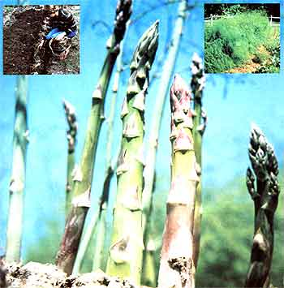

Spring is on its way . . . and many a gardener's fancy turns to thoughts of good eating!
Asparagus(Asparagus officinalis) has always been one of my favorite vegetables, but until I started cultivating it myself, I had no idea how delicious the tender spears could be. Garden-grown (just picked or home-frozen) asparagus provides an experience in taste that just can't be matched by canned or even store-bought fresh produce. And the tasty plant is nutritious, too. As was pointed out in MOTHER NO. 60 (page 112), 100 grams of asparagus will supply 2.2 grams of protein, 900 units of vitamin A, and only 0.2 grams of fat . . . while adding a mere 20 calories to your daily total.
Asparagus has been cultivated since the days of the Roman Republic, when it was considered a delicacy. Later, the French grew the stalks in primitive hotbeds, and honored them in still-life paintings. Eventually, asparagus was brought to America and became popular both as a vegetable and, you may be surprised to learn, as a medicinal herb (it was believed to be a cure for jaundice).
There are a number of popular commercial strains of asparagus available, the most common of which are the Washington varieties. The Mary Washington, which I grow, is both prolific and hardy in my part of Montana. And it would probably grow even better in a somewhat less severe climate, although it does require a dormant period during winter months and thus flourishes only when dormancy is induced . . . either naturally-by cold weather-or artificially.
I set out my Mary Washington roots in April . . . choosing a spot where they'd get several hours of sun daily and where I was pretty sure they wouldn't be disturbed by another project in the future, since I wanted to get a lifetime of picking from the bed. For my first planting, I dug a 12-foot trench, eight inches deep, and spread 20 pounds of ground limestone and 10 pounds of phosphate rock in the bottom of the ditch . . . followed by a five-inch layer of compost and manure. Two inches of rich loam went on top of that. Next-after giving the plot a heavy watering-I planted a dozen clusters of roots, spacing them about a foot apart . . . and then, each time I weeded during the next few weeks, added fine compost and good soil until the trench was filled.
As you may already know, asparagus shouldn't be picked during its first year . . . but the rewards of owning an established bed make the waiting worthwhile. I mulched my asparagus well that first fall, with compost and still more ma nure. Then, the following spring, I watered the bed heavily, spread additional compost, and hand-plucked the early weeds that had cropped up. (Some people let geese take care of the weeding, but-if the idea appeals to you-make sure the honkers are in their pen when the first green asparagus tips show themselves!)
In Montana, the first spears begin to appear in late May or early June. Let the shoots develop to about six inches before you pick any . . . and, after that, keep a close eye on the bed in order to garner the stalks before they go to seed. During that initial harvest season, it's best to exercise a little self-discipline: Allow yourself only two weeks of feasting, and then let the rest of the plants mature. The second time around-and in subsequent years-they can be gathered over a sixweek season.
Generally, an established plot will require little attention. It may occasionally face minor insect problems, but the worst threat to your plants will likely be a disease called asparagus rust. The Mary Washington strain is fairly resistant to this ailment, although it will sometimes be attacked if it's grown in areas that are frequently damp. (For this reason, as well as because the region has insufficient cold weather, asparagus doesn't often do well in southern Florida or along the Gulf Coast.)
Asparagus is sweetest when freshly cut. Within hours after picking, its sugars (like those of sweet corn) begin turning to starch, and the vegetable acquires the slightly bitter taste typical of most grocery store spears. Be sure, then, that you're ready to use or process your pickings immediately.
Believe it or not, garden-fresh asparagus is even delicious raw. You can munch on it while you're doing your outdoor chores, cut it up in a salad, or serve it as an appetizer with sour cream or avocado dip.
To cook your crop, wash the spearse-specially the tips-to remove any clinging dirt. Tie a bunch loosely together and place them upright in a deep, narrow pan (an old coffeepot is often just the right size and shape) with sufficient boiling water to cover the (tougher) bottom ends of the stalks but not the tender tops. When the pot returns to the boil, put a lid on it (to retain the steam) and cook the stalks until they're tender . . . which should be after about 10 minutes. Salt and pepper the spears to taste, and, serve them with butter and a lemon wede . . . or dress them up with cheese, hollan daise, or bearnaise sauce . . . almonds . . . or heated Italian dressing. For variety, you might occasionally want to add ginger, or a soupcon of crushed garlic, as seasoning.
Asparagus can, of course, be incorporated into many soups, casseroles, and breads. Here are just two special dishes that my family likes.
1 tablespoon of salad oil
3 cups of fresh asparagus cut in inch-long sections
salt and pepper
Heat the oil in the skillet, and-when it's quite hot-add the asparagus and seasonings. Cover the pan and hold it just slightly above a burner set on "high", shaking it constantly. After about 4 minutes, the morsels will have a wonderful crisp-tender texture.
2 pounds of washed spears
1/4 cup of white wine
1/4 cup of melted butter
1/2 teaspoon of salt
1/4 teaspoon of pepper
1/3 cup of grated Parmesan cheese
Dunk the asparagus in boiling water, cover it, reduce the heat, and allow the pot to simmer for just 8 minutes. Meanwhile, stir the wine into the melted butter. When the time's up, drain the vegetables (save the liquid for soup makings), pour on the sauce, add the salt and pepper, and sprinkle the cheese on top. Bake the dish, uncovered, in a 425°F oven for 15 minutes.
Once your bed is in full production, it's just possible that your daily haul of tender spears will be more than you want to consume right away. And, in my opinion, freezing is about the best way to preserve asparagus, since its texture and taste are better retained in that process than they are in canning.
Here's the method I use-every day, in season-to store my extras for good eating the following winter. [1] Clean the young spears and use string to tie them in meal-sized bundles. [2] Bring a large pot of water to boiling and add the asparagus. [3] Blanch it for 3 minutes (begin timing only after the water returns to a full rolling boil). [4] Lift the bundles out of the pot and plunge them into ice water. [5] Once the stalks are completely cooled, pack them-airtight-in plastic bags or other containers. [6] Label and date the packages, and pop them into the freezer.
As an alternative, you can dry asparagus, if you use only the tender tips. First, wash them thoroughly, and then steam them for 2 minutes. Spread the blanched tops, on trays, in a dehydrator or a 140°F oven for 3 to 5 hours . . . or dry them in full sun-when the temperature is 98 to 100°F-for 8 to 10 hours. Don't skimp on the time . . . the stalks aren't "done" till they're either leathery or brittle.
When reconstituted, dried asparagus has a soft texture-much like that of the canned product-and a brownish color. It's best used in a finely ground form, added to broths, sauces, or casseroles.
If I've convinced you to put in your own asparagus bed, it's time to place your order. I purchased my Mary Washington roots from a local nursery, but just in case your nearest garden emporium doesn't carry them, here are some mail order sources for both roots and seeds (one packet of seeds will sow a 20-foot row . . . but roots, of course, produce a harvest sooner).
Burpee Seed Company, Dept. TMEN, Warminster, Pennsylvania 18991 . . . or Clinton, Iowa 52732 . . . or Riverside, California 92502 (one-year roots).
Jackson & Perkins, Dept. TMEN, Medford, Oregon 97501 (two-year roots).
Earl May Seeds & Nursery Company, Dept. TMEN, North Elm Street, Shenandoah,
Iowa 51603. R.H. Shumway, Dept. TMEN, 628 Cedar Street, Rockford, Illinois 61101.
|
 INSET, LEFT: Asparagus roots are planted in clusters about a foot apart. INSET, RIGHT: Feathery foliage appears once the firstyear plants go to seed, but harvesting doesn't begin until the second season. BELOW: The sweet, tender spears of Asparagus officinalis. |
|
|